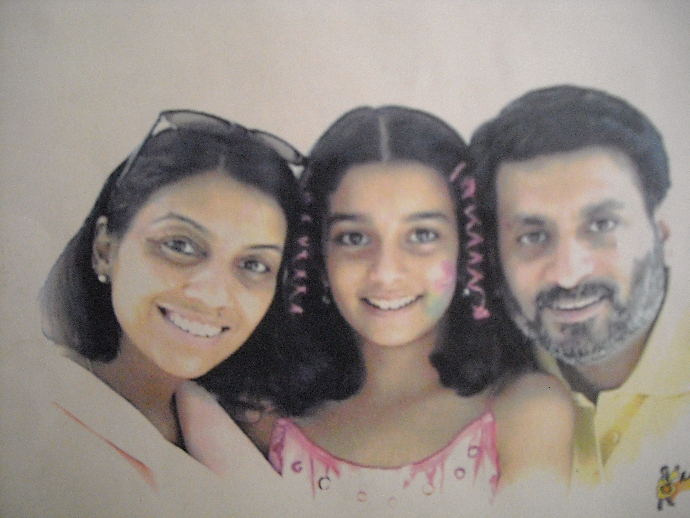

I, Alekhya Bommkanti, currently pursuing my masters in Information technology from JNTUH. During a subtle discussion with my family on the recent sexual assaults happening on women in our country, the unsolved double homicide of Arushi Talwar and Hemraj which took place in Noida on the night of 15th May 2008 at Arushi’s House was one of the most notable case during the discussion which intrigued me to research on the same. As of the research process, the Primary suspects being Arushi’s parents, the main suspects and the primary suspects were interrogated by the CBI and claimed that the dubious methods were used to extract a confession from the suspects. However in the end, the main suspects were set free due to the inability of CBI to find concrete evidence.
On 8 March 2018, the CBI challenged the Supreme Court. The case remains unsolved till date.
